Let Gibbs Distribution MRF
 be an image (for example intensity or range) over
an 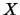 lattice of sites
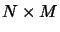, namely
be an image (for example intensity or range) over
an 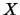 lattice of sites
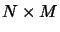, namely
The basic idea behind Markovianess is for to have local dependencies. In fact, among other properties, it is this locality property which makes MRF modeling an attractive proposition for problems in vision. Formally, we say that
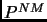
For example a first order neighborhood neighborhood, first order of 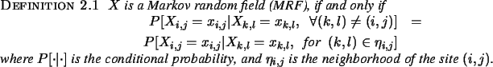 would consists of sites 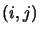, 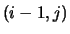, 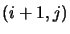, and 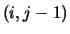. Figure 2.1 illustrates first and second order neighborhood, second order neighborhood.
The neighborhood structure is assumed to be translational invariant, except at the boundary, where the free boundary assumption is made, namely, the set of neighbors of a boundary site is the intersection of the translational invariant neighborhood with the finite lattice. For example, assuming a second order neighborhood, the boundary site will have neighbors . In essence, this amounts to appending rows
and columns of zeros all around the image; the size of
these rows and columns will depend on the size of the image
and the neighborhood order.
. In essence, this amounts to appending rows
and columns of zeros all around the image; the size of
these rows and columns will depend on the size of the image
and the neighborhood order.
Besides locality another important aspect of MRF models is that their distribution can be explicitly stated, and this is what lends real power to the use of MRF models.
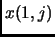
Proof: See Appendix B.
Now , also referred to as simply the energy function is defined by
| 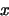 | (1) |
where 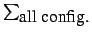 is the potential function defined over cliques 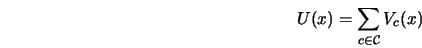. This bring us to the discussion on cliques.
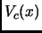
This definition is best understood by considering some examples. For a first order neighborhood corresponding to the site the clique set is
For a second order neighborhoodneighborhood, second order, corresponding to the site , the clique set is
Figure 2.1(a) and Figure 2.1(b) display cliques for a first neighborhood, first order order and second order neighborhood systems respectively. Note that the number of cliques quickly blows up by increasing the neighborhood order. Thus, in most applications one considers a first order or a second order neighborhood systems. Often one considers higher order neighborhood systems but restricts attention to pair cliques, or some such simplification, to ensure that the total number of cliques per pixel is not too large.
To illustrate the above definitions we cite the example of the
Ising model [89]. Here  is a binary image with
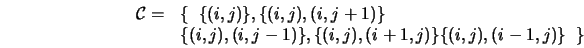 (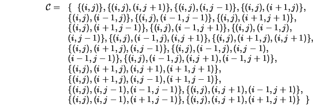 representing an up-spin and 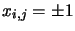
representing a down-spin). Moreover the Ising model assumes a
first order neighborhood, and the energy function in
is given by
is a binary image with
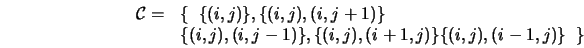 (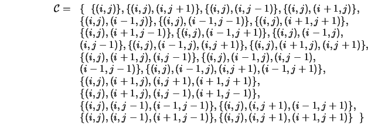 representing an up-spin and 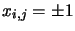
representing a down-spin). Moreover the Ising model assumes a
first order neighborhood, and the energy function in
is given by